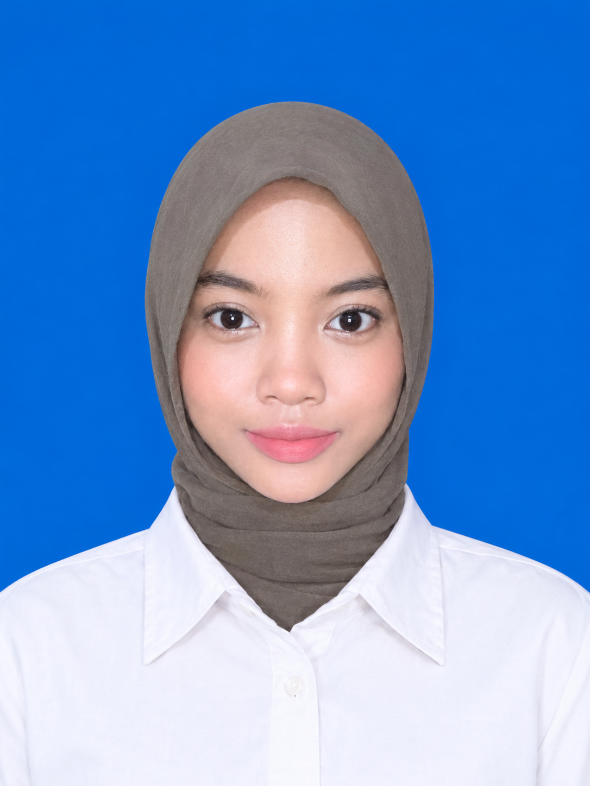

HELLO, I'M
Mahasiswa Sistem Komputer yang memiliki ketertarikan pada teknologi, hardware, analisis data, dan pengembangan aplikasi berbasis web.

COMPUTER SYSTEM
GET TO KNOW ME
Computer System Student
Saya adalah mahasiswa S1 Sistem Komputer di Universitas Bung Karno. Saya memiliki ketertarikan pada bidang teknologi, hardware komputer, analisis data, dan pengembangan sistem berbasis web.
Saya senang mempelajari bagaimana sebuah sistem bekerja, mulai dari perangkat keras hingga perangkat lunak. Saya juga memiliki pengalaman dalam analisis data, dokumentasi, Microsoft Office, serta bekerja sama dalam tim.
WHAT I CAN DO
Memahami komponen komputer dan mampu melakukan proses bongkar serta rakit PC.
Membuat website sederhana menggunakan HTML dan CSS dengan desain responsive dan modern.
Mempelajari pengolahan dan analisis data menggunakan Google Colab untuk menghasilkan informasi dari data.
Memahami dasar sistem komputer, jaringan komputer, perangkat keras, dan cara kerja sistem.
Mampu bekerja dalam tim, teliti, bertanggung jawab, komunikatif, dan memiliki inisiatif.
Terampil menggunakan Microsoft Office untuk kebutuhan dokumentasi dan pekerjaan perkuliahan.
MY RECENT WORK
Project analisis data curah hujan menggunakan Google Colab untuk mengolah, mengeksplorasi, dan mendapatkan informasi dari data.
Project sistem smart home sederhana untuk mengontrol lampu menggunakan suara atau tepukan tangan sebagai input.
Membuat aplikasi absensi siswa berbasis web yang digunakan untuk mengelola data siswa, guru, kelas, mata pelajaran, jadwal, dan absensi.
Praktik mengenali komponen komputer serta melakukan proses pembongkaran dan perakitan PC dengan memperhatikan fungsi setiap komponen.
MY JOURNEY
Menempuh pendidikan tinggi pada Program Studi Sistem Komputer.
Menempuh pendidikan menengah atas dengan jurusan MIPA.
Berperan sebagai sekretaris dalam organisasi UKM Seni Tari serta ikut berpartisipasi atau berperan aktif tampil dalam berbagai kegiatan dan event kampus.
Pengalaman kerja part time sebagai SPG pada periode September 2024 sampai Desember 2024.
LET'S CONNECT
Terima kasih sudah mengunjungi portofolio saya. Jangan ragu untuk menghubungi saya untuk berdiskusi mengenai project, teknologi, maupun kesempatan lainnya.